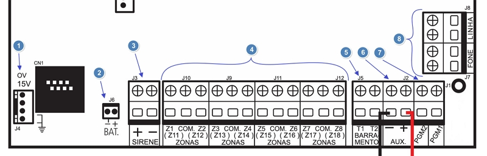

Funcionamento de uma Central de Alarme
Uma central de alarme é um sistema de segurança projetado para detectar e alertar sobre intrusões, incêndios ou outras emergências em uma propriedade. Aqui está uma visão geral de como uma central de alarme funciona:
Painel de Controle ou Central de Alarme: O painel de controle é o cérebro do sistema de alarme. Ele recebe sinais dos sensores e decide se deve acionar o alarme. O painel de controle pode ser programado para responder a diferentes tipos de eventos de maneiras específicas.
Sensores: A central de alarme é conectada a vários sensores que monitoram diferentes áreas da propriedade. Esses sensores podem incluir detectores de movimento, sensores de portas e janelas, detectores de fumaça e sensores de quebra de vidro.
Alarmes: Quando um sensor detecta uma atividade suspeita, ele envia um sinal ao painel de controle. Se o painel de controle determinar que a atividade é uma ameaça, ele aciona os alarmes. Os alarmes podem incluir sirenes, luzes piscantes e notificações enviadas ao proprietário ou a uma empresa de monitoramento.
Comunicação: Muitas centrais de alarme modernas estão conectadas a redes de comunicação, como linhas telefônicas, internet ou redes celulares. Isso permite que o sistema envie alertas para o proprietário ou para uma central de monitoramento em caso de emergência.
Monitoramento: Algumas centrais de alarme são monitoradas por empresas de segurança que fornecem serviços de monitoramento 24 horas por dia. Quando um alarme é acionado, a empresa de monitoramento pode verificar a situação e, se necessário, enviar autoridades de emergência para o local.
Desativação: O proprietário pode desativar o alarme usando um código de acesso ou um controle remoto. Isso é útil para evitar falsos alarmes quando o proprietário entra na propriedade.
Principais Caracteristicas
A grande maioria das centrais de alarme, são compostas por:
